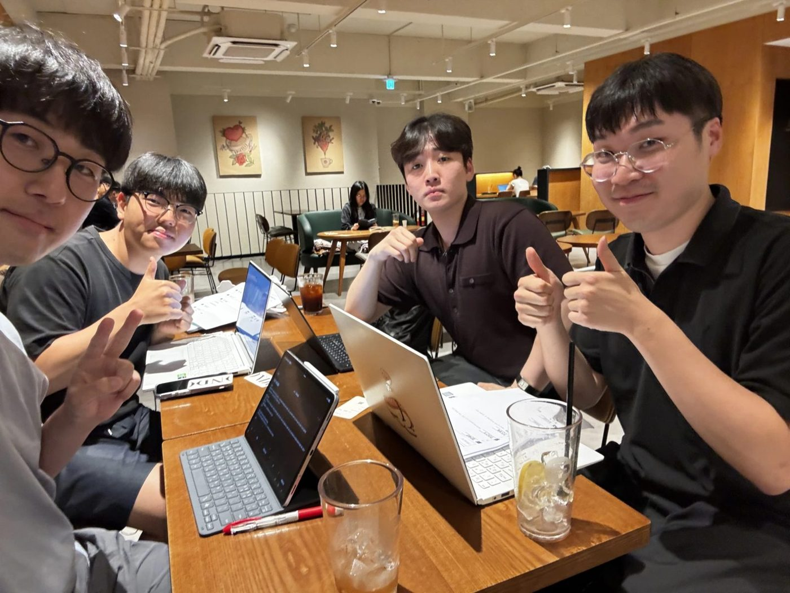
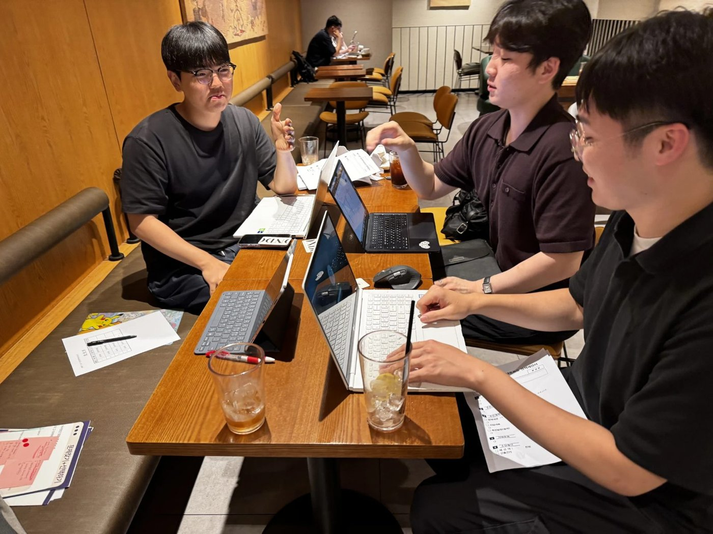
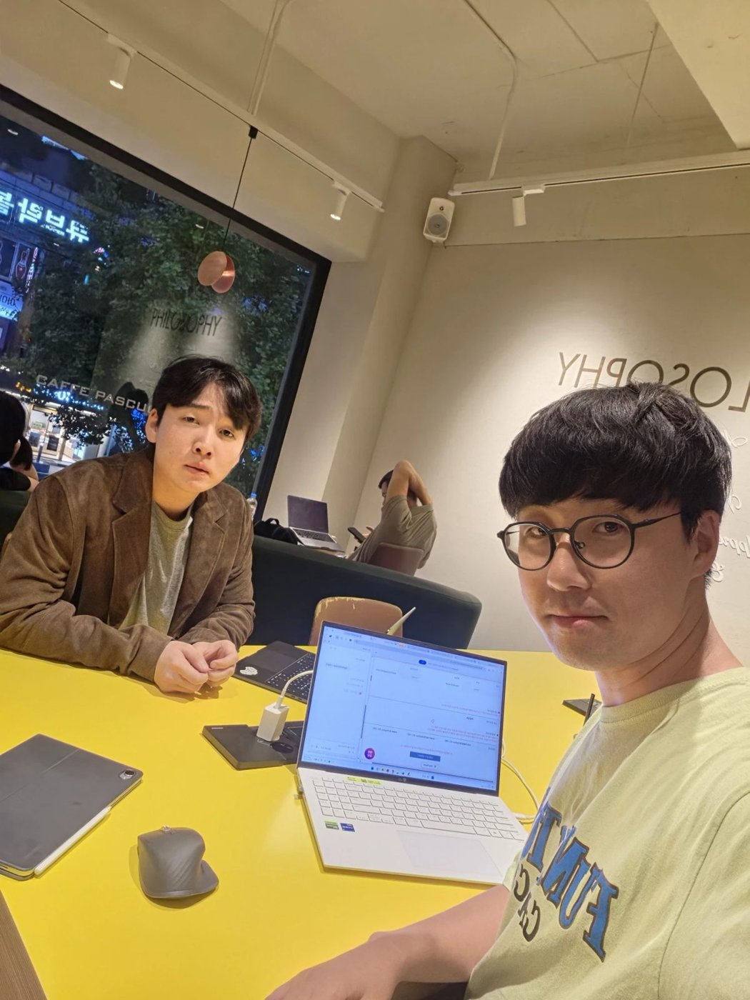
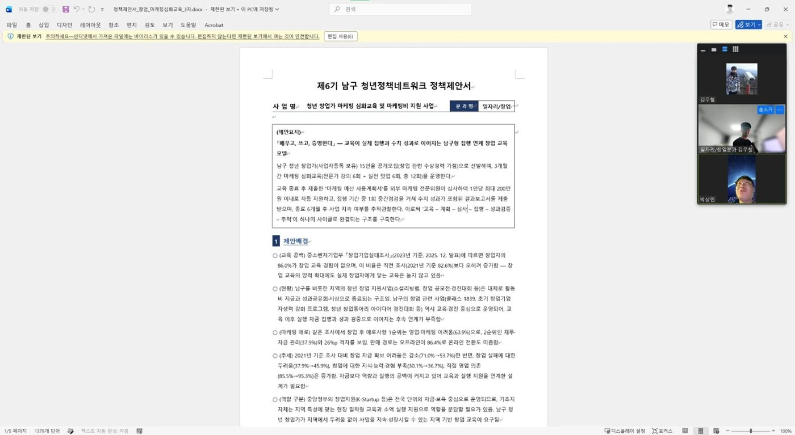
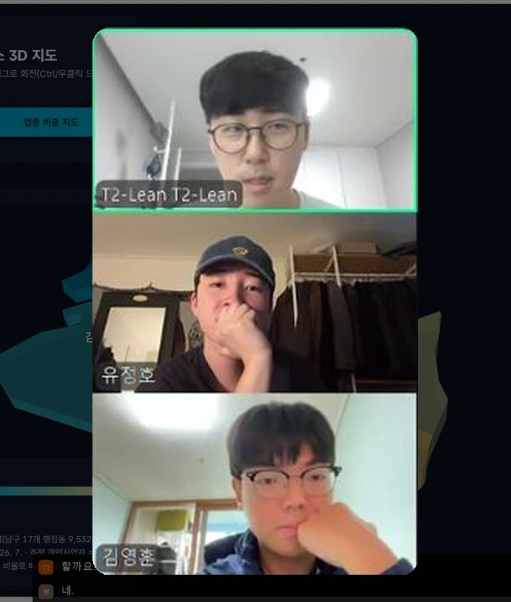

청년 창업가 마케팅 심화교육 및 마케팅비 지원 사업
마케팅 실행 검증형 시범사업제6기 남구 청년정책네트워크 · 일자리/창업 분과
필요성 — 남구 음식업은 1년에 6곳 중 1곳 교체, 반경 300m 안에 같은 업종 수십 곳. 생활형일수록 높은 마케팅 애로(음식 65.6%, 도소매 67.8%)
추정치. 추정 퇴출 = 존속 1년 미만 사업자 − 전년 대비 순증감. 업태 변경과 전출입이 포함된 근사값.
읽는 법 · p: 우연히 생긴 변화일 가능성(0.001 미만이면 0.1% 미만) · τ: 한 방향으로 꾸준히 움직인 정도(1에 가까울수록 꾸준한 상승, −1에 가까울수록 꾸준한 하락) · 네이버 플레이스는 7년 전체로는 불분명(τ=0.10), 최근 3년만 뚜렷
상위 법령: 「청년기본법」 · 「청년고용촉진 특별법」
근거: 「부산광역시 남구 청년 기본 조례」 2025. 4. 7. 개정본 · 조문 번호 제출 전 최종 확인결과보고서 10건 확보 확률 94%
이탈률 20% 가정 · 확률 계산(이항분포) · 코칭 12분/인 상한 · 예비 2명
이탈률은 가정값. 예비 2명 충원 시 이탈 25%에서도 96%
휴대폰은 신청 화면, PC는 관리 화면 설치 없이 QR로 접속
용어: p는 우연히 생긴 결과일 가능성(작을수록 믿을 만함) · τ는 한 방향으로 꾸준히 움직인 정도(1에 가까울수록 꾸준함) · 모의실험은 가정값을 바꿔 가며 2만 번 계산한 결과




